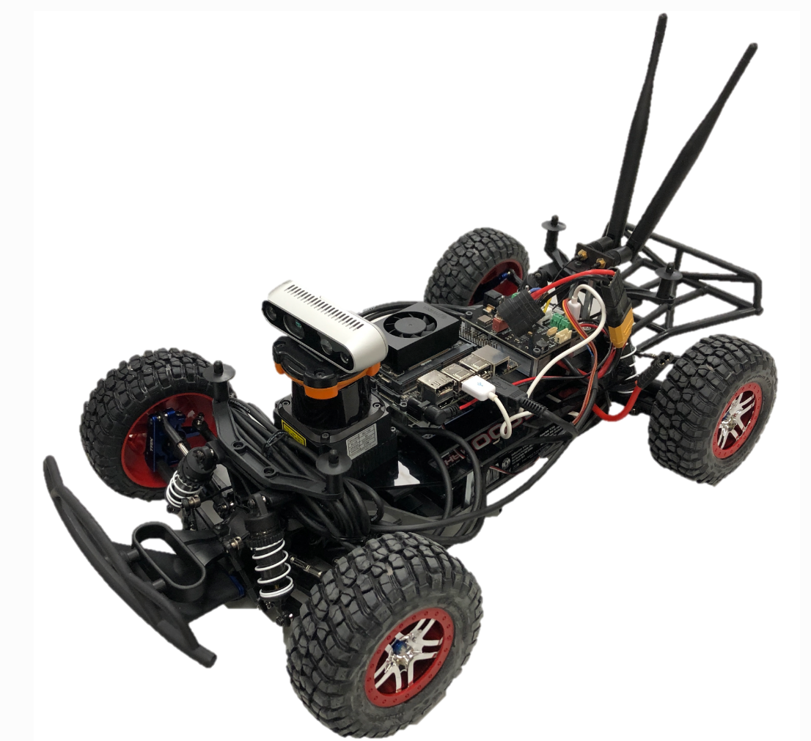

F1tenth Line Following and Obstacle Avoidance
Summary: Develop an autonomous system utilizing real-world sensors and visual informationDevelop an autonomous system utilizing real-world sensors and visual informationDevelop an autonomous system utilizing real-world sensors and visual informationDevelop an autonomous system utilizing real-world sensors and visual informationDevelop an autonomous system utilizing real-world sensors and visual information
Goal
- Develop an autonomous system utilizing real-world sensors and visual information.
- Validate the computer vision algorithms and PID controller in a real-world context.
System Overview
- Line Detection using RGB Camera
- Line Fitting and Error Computing
- PID Controller
- Obstacle Avoidance with LiDAR
Fig.1 System Overview
Method
-
- Color Space Conversion
-
Converts the images from BGR to HSL color space.
- Perspective Transformation
-
Transforms the images' perspective to estimate Bird's eye view.
- Color Thresholding
-
Extracts a yellow line from the environment using saturation channel.
- Getting Line Array
-
Uses pixel counting to distinguish the line from noise.
- Line Fitting
-
Selects 4 points to fit a quadratic equation representing the line.
Line Detection
PID Controller
The error is the difference between the lateral position of the lookahead point derived from the line equation and the centerline of the image. The controller utilizes the error to estimate the control signal (steering angle) for correcting the direction. The tuning process involves adjusting K, Ki, and Kd to optimize controller performance.
Fig.2 Error Calculation
Result
-
The car can adjust its direction to accurately trace the line. Based on our evaluation metric, the car demonstrates the capability to complete three laps without disengaging from the centerline.
-
When the forward-facing 90-degree of lidar reading detects an obstacle at a predetermined distance, the car is able to stop preventing any collision with the identified object. After the objects are removed, the car can resume following the lane.
Line Following
Obstacle Avoidance
Related Skills
- Computer Vision
- PID Controller
- Robot Operating System (ROS)
- LiDAR
Contributors
- Narathip Rodwarna
- Kalaipriyan R
- Chi-Min Liao
- Hsuan-Jung Pan